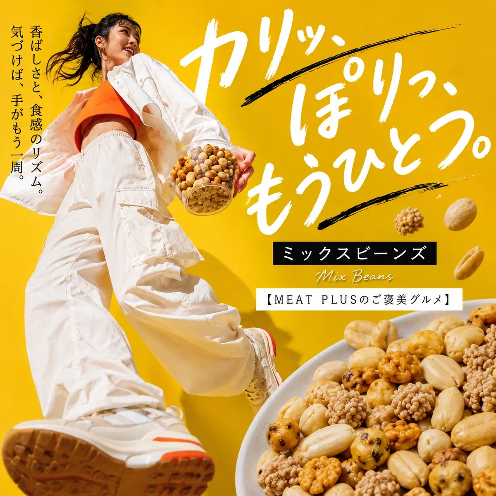
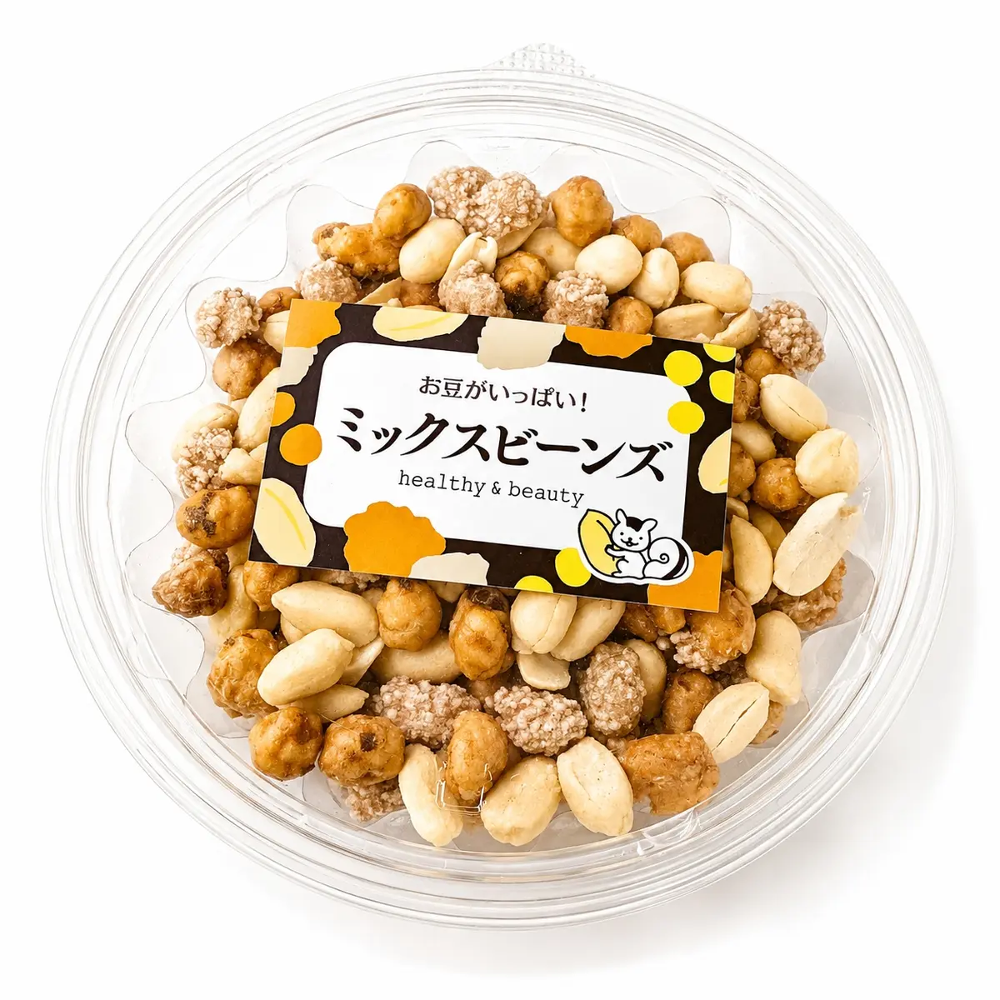

SCENE 01選ぶ楽しさまで、

MIXED BEANS / 270g
カリッ、ぽりっ。
一口ごとに変わる味と食感。
香ばしい落花生を中心に、あられや砂糖がけ、醤油風味などを組み合わせた豆菓子ミックスです。お茶請けや家飲みのおつまみとして、みんなで楽しめる270g入り。
公式オンラインショップで商品を見る価格・在庫・配送条件は公式オンラインショップでご確認ください。

甘みのあるものから醤油風味まで、異なる味と食感を一度に楽しめます。
ご家族でのおやつや、家飲みのおつまみ、来客時のお茶請けにも。
直射日光・高温多湿を避けて保存できます。賞味期限は発送日より3ヶ月です。
PRODUCT INFORMATION
落花生（中国）、砂糖、落花生（中国、アメリカ、その他）、澱粉、小麦粉、米、植物油、醤油加工品、寒梅粉ミックス、ココアパウダー、食塩、砂糖調製品、デキストリン、海苔、ガーリックパウダー、発酵調味料／加工澱粉、調味料（アミノ酸等）、着色料（カラメル、パプリカ、ベニコウジ）、甘味料（カンゾウ）、香辛料抽出物、（一部に落花生・小麦・大豆を含む）
FAQ
原材料の一部に落花生・小麦・大豆を含みます。アレルギーをお持ちの方は、商品パッケージの原材料表示をご確認ください。
直射日光・高温多湿を避けて常温で保存してください。開封後は蓋を閉め、賞味期限にかかわらずお早めにお召し上がりください。